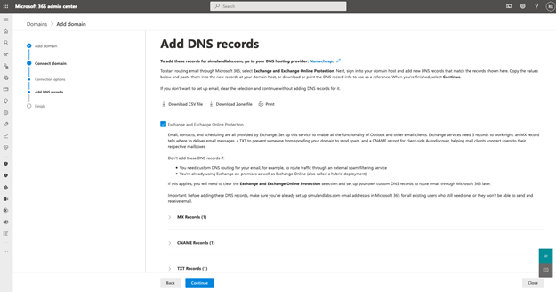

Add Domain to Microsoft 365 Tenant
Contents
Add Domain to Microsoft 365 Tenant#
Azure AD tenants come with an initial domain name, <domain-name>.onmicrosoft.com. That domain name cannot be changed or deleted, but you can add new custom domain names.
In a lab environment, we would want to authenticate to applications in the cloud with the same credentials we use in an on-prem domain environment. In that scenario, we would need to synchronize the “on-prem” AD users with an Azure Active Directory (Azure AD) tenant. If you have a Microsoft 365 subscription, you can start this process by adding a custom domain to it through the Microsoft 365 admin center experience. One requirement is that you own the valid registered domain name.
Pre-Requirements#
A registered valid domain name
Main Steps#
Access Microsoft 365 admin console
Add custom domain
Verify domain ownership
Connect domain to MS 365 Services (Optional)
1. Access Microsoft 365 Admin Console#
Go to Settings > Domains
Click on “Add Domain”
2. Add Custom Domain#
Enter the name of the domain you just purchased or you already own:
3. Verify Domain Ownership#
You will need to prove that you own the domain. I usually choose the verification option to add a TXT record to the DNS records of my domain.

Add TXT Records to Domain Settings#
Log on to your domain provider console.
Select domain DNS settings.
Add TXT record

4. Connect Domain to MS 365 Services#
Next, you will have the option to attach specific Microsoft 365 services to your domain.

Add Additional DNS Records

That’s it! You have successfully added a custom domain to your Microsoft 365 subscription.


One thing you can do is check the Azure Active Directory (Azure AD) tenant of your Microsoft 365 subscription, and you will now see the custom domain there and verified.
Click on
Custom domain names